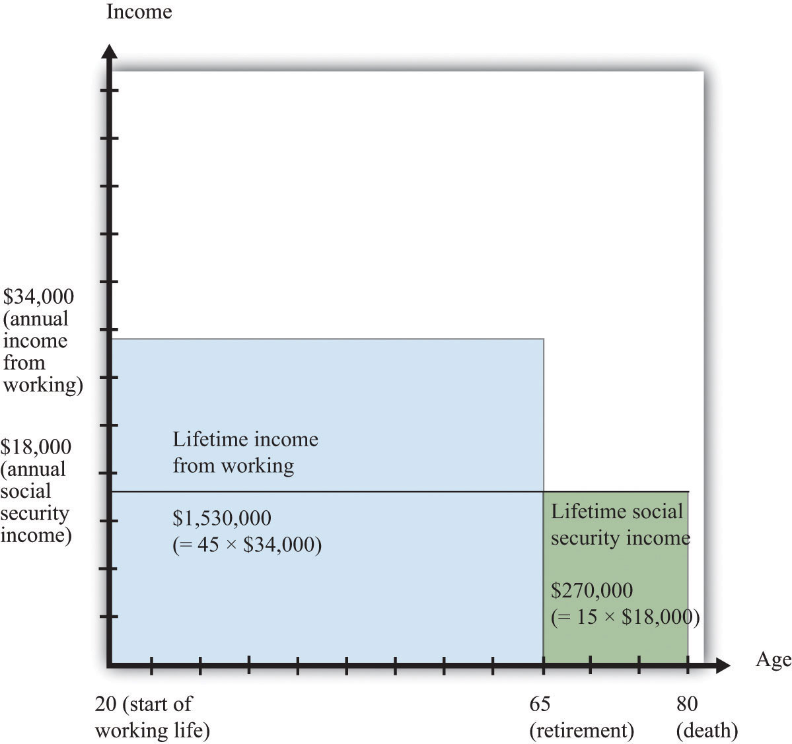
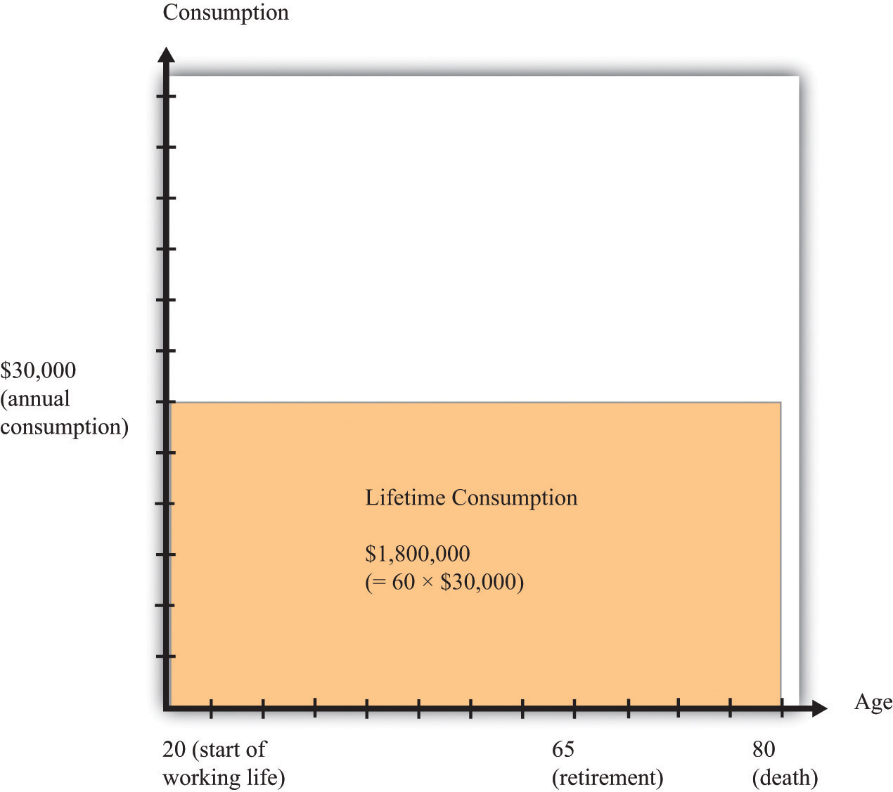
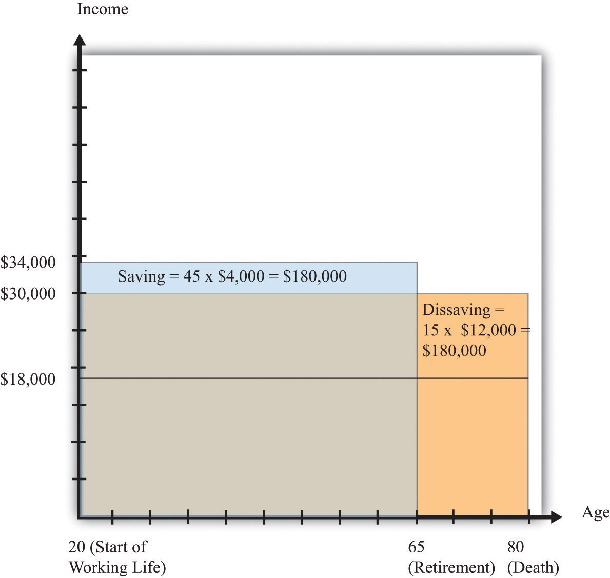
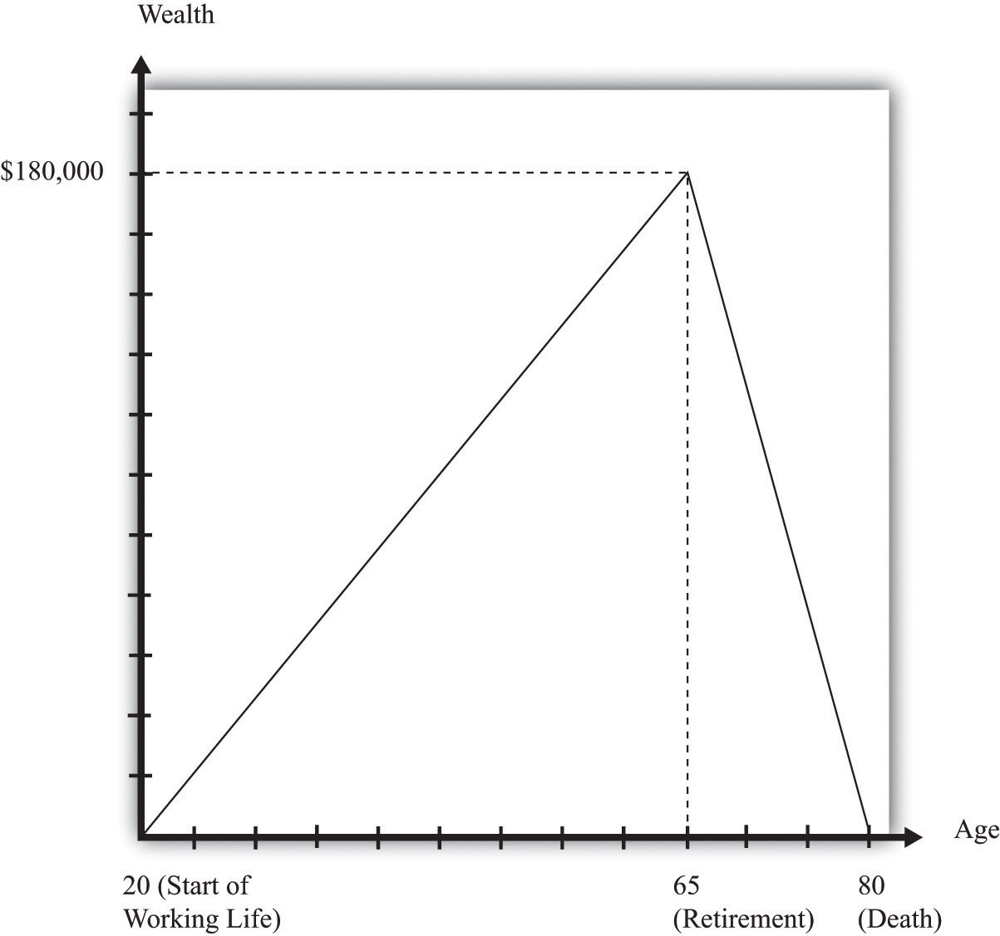
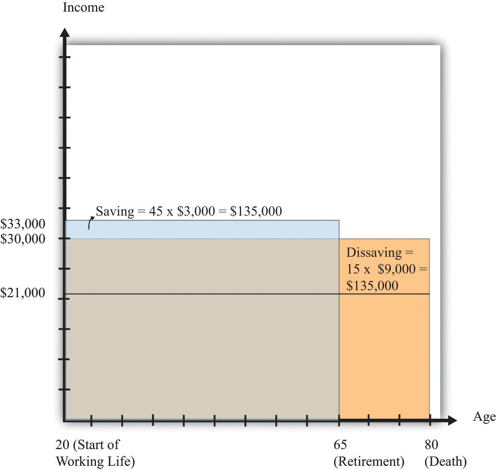
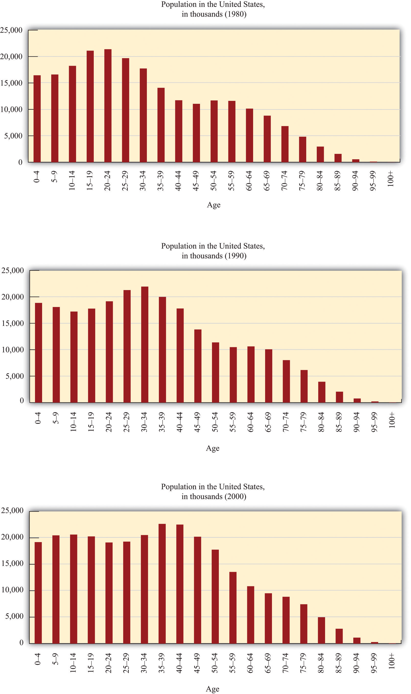

Benjamin Franklin famously wrote that “in this world nothing is certain but death and taxes.” The current chapter is about both.
If you are like most readers of this book, you are at the very beginning of your working life, and you have probably given little thought to your retirement. In the early years of work, you might be asked to make some decisions regarding a company pension plan, but it is still unlikely that you will spend much time thinking about how you will live when your working life is over. This is normal; none of us is very good at imagining at the age of 20 what our life will be like when we are 70. (Even at the age of 30, or 40, or 50, it is hard to imagine life at age 70.)
One message of this chapter, though, is that even though it is hard to think that far ahead, it is also smart to try to do so. From the very beginning of your working life, you will be making decisions that affect your life in retirement. And from the very beginning of your working life, those decisions will—or should—be influenced by something called the Social Security system.
Social Security was born in the Great Depression. Many people suffered tremendous economic hardship in the 1930s. As part of President Franklin D. Roosevelt’s New Deal in the 1930s, the US government established several systems to alleviate such hardships. Social Security—one of the most important—was designed to provide financial assistance to the elderly. More than 170 other countries, big and small, rich and poor, also have social security systems. To take a few random examples, you will find social security in operation in Mexico, France, the United Kingdom, Kiribati, Laos, Azerbaijan, Chile, Andorra, Burkina Faso, Egypt, Cyprus, Paraguay, and Slovenia.
The Social Security system will give you money when you are older, but it takes money from you when you are working. So even if it is hard to think about the effect that Social Security will have on your income in the distant future, it is very easy to see the effect it has when you are working. Workers are required to make Social Security contributions—one of the many kinds of tax that we all pay—with the promise that they will receive reimbursement from the system when they are older. The state of the US Social Security system is therefore something that you should think about long before you receive payouts. Decisions about your personal saving and consumption right now are, or at least should be, directly influenced by your current tax contributions and expectations of your future Social Security payouts.
Opinion polls reveal that Social Security is one of the most well-supported government programs in the United States. Yet the casual reader of the newspapers could be forgiven for thinking that the system is perpetually in crisis. In the 1980s, for example, there was discussion of serious difficulties with the funding of Social Security. A commission headed by Alan Greenspan (who later became chairman of the Federal Reserve Bank) identified problems with the system and recommended a large number of changes, including some increases in Social Security tax rates. These reforms were supposed to ensure the solvency of Social Security well into the future. Yet, a few decades later, proposals for major reforms of Social Security are back under discussion. The exact form that Social Security will take in the coming decades is an open question that will continue to play a major role in political debate.
We explain the details of the system more carefully later in this chapter, but the basic idea is the following. The government taxes current workers and uses those revenues to pay retired workers. When the system was originally set up, the idea was that payments to retired people in a given year would be (approximately) funded by taxes on those working during that year, so the system would be roughly in balance. For many years, this “pay-as-you-go” structure worked fine. In some years, payments to workers were larger than tax receipts, and in some years, they were smaller, but on the whole there was an approximate match between payments and receipts.
In the 1980s, policymakers first began to pay serious attention to the fact that there was a problem with the pay-as-you-go structure. Demographic changes mean that the system is not balanced in the very long run. The number of retirees relative to the number of workers will increase substantially over the next two decades, and without changes, the time will come when tax revenues will no longer be sufficient to match the obligations of the system.
This is not a looming crisis. The best estimates suggest that the system will no longer be able to pay the full amount of benefits near the middle of the century, although there is disagreement on the exact date. The most recent Social Security Trustees report (http://www.ssa.gov/OACT/TRSUM/index.html) predicted this date as 2036, whereas in 2005 the Congressional Budget Office (http://www.cbo.gov/ftpdocs/60xx/doc6074/02-09-Social-Security.pdf) gave a date of about 2054.See the discussion at Charles P. Blahous III and Robert D. Reischauer, “Status of the Social Security and Medicare Programs,” Social Security Administration, 2011, accessed July 20, 2011, http://www.ssa.gov/OACT/TRSUM/index.html; Douglas Holtz-Eakin, “CBO Testimony,” Congressional Budget Office, February 9, 2005, accessed July 20, 2011, http://www.cbo.gov/ftpdocs/60xx/doc6074/02-09-Social-Security.pdf. Of course, changes will almost certainly be made well before this crisis point. But what form should those changes take?
How should we reform Social Security?
This question matters to every single one of us. As workers, we all pay into the Social Security system, and we all anticipate receiving benefits when we are retired. The current discussion will determine both the level of taxes we pay now and the benefits we will receive in the future.
The average person could be forgiven for thinking that the debate over Social Security is complicated, arcane, and impossible to understand without an immense amount of study. In fact, the basics of the system are quite straightforward, and the most important elements of the discussion can be understood using very little economics. In this chapter, we demystify the arguments about Social Security. This will make it easier for you to understand why you pay Social Security contributions, what you can expect to get in the future, and whether the politicians and talking heads are making any sense when they discuss various reforms.
At the heart of the economic analysis of Social Security is a very straightforward idea: “forced saving.” Individuals are required to give up some of their income now—income that they could, if desired, have used for current consumption—and, in return, they are promised income in the future. Understanding Social Security from the individual perspective means understanding the impact of this forced saving on individual choices.
Meanwhile, we also need to understand how Social Security looks from a government perspective. Social Security contributions are a source of government revenue, and Social Security payments are an example of a government transfer. These revenues and payments enter into the government’s budget constraint.
From the perspective of an individual, there is a disconnect in time between taxes and payments. Individuals pay taxes during their working years and receive transfers during their retirement years. But from the perspective of the government, taxes and payments take place at the same time. In any given year there are some individuals who are working and paying taxes, and the money they pay into the system is paid right back out to others who are in retirement.
To address questions about reforming the Social Security program, we therefore need to understand (1) the structure of the program and (2) how it interacts with individual choices about consumption and saving. We study how individuals respond to Social Security by using a model of consumption and saving that applies over an individual’s lifetime. Once we understand how individuals make these choices, we ask how Social Security affects their decisions. Then we think about how the government fits into the picture. We study these flows into and from the Social Security program using the government budget constraint, to link changes in the program with changes in taxes.This tool is used elsewhere in the book in other applications, such as Chapter 27 "Income Taxes" and Chapter 29 "Balancing the Budget". In the end, we are able to see how individuals’ consumption and saving decisions are influenced by their beliefs about government behavior.
After you have read this section, you should be able to answer the following questions:
We begin with the individual perspective on Social Security.
Household incomes tend to vary quite a lot, but households like their consumption to be approximately constant over time. Households therefore use their savings to smooth out the variations in their income.We also discuss consumption smoothing in Chapter 27 "Income Taxes". For the purposes of understanding Social Security—both its problems and its reforms—we need to examine this idea of consumption smoothing more rigorously. Because Social Security is a program to provide for consumption in retirement, we must carefully lay out the decisions of a household over the entire lifetime of its members. By so doing, we can determine the likely effect of a promise of a transfer in the future on behavior today. Bear in mind that these transfers may be far in the future: for a 25-year-old worker, we are thinking about money that won’t be received for another 40 years or so.
As is often the case in economics, we start by looking at the simplest setup we can imagine. We do this not because we think we can answer every question with a simple model, but because we must make sure we understand the fundamentals of Social Security before we worry about the complexities. So, to keep things simple, we examine the life of a single individual—that is, think of the household as containing just one person. Hence we do not have to worry about multiple wage earners (who might be of different ages), and we do not have to worry about how to incorporate children (who grow up and leave the household) into our story. In this chapter, we use the terms individual and household interchangeably. We call our individual Carlo.
Carlo thinks about his income and consumption over his entire lifetime. Because he has the possibility of saving and borrowing, his income and consumption need not be equal in any given year. Carlo faces a lifetime budget constraintThe discounted present value of lifetime consumption must equal the discounted present value of lifetime income., however; in the end, his lifetime spending is limited by his lifetime income. The life-cycle model of consumptionA model studying how an individual chooses a lifetime pattern of saving and consumption given a lifetime budget constraint. examines Carlo’s decisions about how much to consume each year, given this budget constraint.
We begin with a simple numerical example. Suppose Carlo is 20 years old and very well informed about his future. He knows that he is going to work for 45 years—that is, up to age 65. He knows that, every year, he will receive income of $40,000, excluding Social Security contributions. He has to pay Social Security contributions on this income at a rate of 15 percent. Thus he knows he will pay $6,000 each year to Social Security, and his after-tax income is $40,000 − $6,000 = $34,000. After he retires at age 65, he knows he will receive a Social Security payment of $18,000 each year until he dies, 15 years later, on his 80th birthday (of heart failure, brought on by the exertion of blowing out all those candles).
To decide on his lifetime consumption and saving patterns, Carlo needs to know what his lifetime resources are. We know that, in general, a dollar today is not worth the same amount as a dollar next year—or 60 years from now—because of interest rates and inflation. We sidestep that problem for the moment by imagining that the real interest rateThe rate of return specified in terms of goods, not money. is zero. In this case, it is legitimate to add together dollars from different time periods.
So Carlo earns $34,000 per year for each of his 45 working years and obtains $18,000 per year for his 15 retired years. His total lifetime resources are as follows:
lifetime income = income during working years + income during retirement years = ($34,000 × 45) + ($18,000 × 15) = $1,530,000 + $270,000 = $1,800,000.Over his life, therefore, he has $1.8 million to spend. Figure 28.1 "Lifetime Income" shows his lifetime income. His total lifetime resources are obtained by adding together the two rectangles labeled “Lifetime Income from Working” and “Lifetime Social Security Income.” The height of each rectangle gives his income, and the width of each rectangle gives the number of years for which he earns that income.
Figure 28.1 Lifetime Income
For 45 years, Carlo earns $34,000 per year (for a total of $1,530,000), and for 15 years, Carlo receives $18,000 per year in Social Security payments (for a total of $270,000). His total lifetime income is $1,800,000.
Carlo’s lifetime budget constraint says that his lifetime consumption must equal his lifetime income,
lifetime consumption = lifetime income.If Carlo wants to keep his consumption perfectly smooth, he will consume exactly the same amount in each of his 60 remaining years of life. In this case, his consumption each year is given by the following equation:
Figure 28.2 "Lifetime Consumption" shows Carlo’s consumption. The area of the rectangle is a measure of Carlo’s lifetime consumption since—as before—the height of the rectangle is his consumption per year, and the width is the number of years.
Figure 28.2 Lifetime Consumption
For the 60 years of his remaining life, Carlo spends $30,000 per year, making a total of $1,800,000 during his working years.
In each of his working years, Carlo earns $34,000 but consumes only $30,000. Thus he saves $4,000 every year. When he is 21 years old, he therefore has $4,000 in the bank. When he is 22 years old, he has $8,000 in the bank. By the time he retires at age 65, he has saved $180,000 (= 45 × $4,000).
During his retirement years, Carlo starts to draw on his savings. Social Security pays him $18,000, so he needs to take an additional $12,000 from his savings to have $30,000 in consumption. At age 66, therefore, he has savings of $180,000 − $12,000 = $168,000. For each of his retirement years, his savings are reduced by a further $12,000. After his 15 years of retirement, he has reduced his savings by $12,000 × 15 = $180,000 and dies at the age of 80 with exactly zero in the bank.
Figure 28.3 "Lifetime Consumption and Saving" combines Figure 28.1 "Lifetime Income" and Figure 28.2 "Lifetime Consumption" and shows Carlo’s income and consumption. The difference between income and consumption in Carlo’s working years is his saving. Notice the rectangles labeled “saving” and “dissaving.” One way of understanding his lifetime budget constraint is that these two rectangles must be equal in area.
Figure 28.3 Lifetime Consumption and Saving
During his 45 working years, Carlo saves $4,000 per year. During his 15 retirement years, Carlo dissaves at a rate of $12,000 per year.
Figure 28.4 "Lifetime Wealth Accumulation" shows his wealth over his lifetime. It increases from zero to $180,000 and then decreases again to zero. The fact that he ends his life with exactly zero wealth is just another way of saying that he exactly satisfies his lifetime budget constraint.
Figure 28.4 Lifetime Wealth Accumulation
Over his working life, Carlo builds up his stock of wealth, so he has $180,000 in his bank account when he retires. During retirement, he dissaves, exactly using up the $180,000 he accumulated while working.
Now let us shift perspective and examine the Social Security system from the perspective of the government. The original intention was that Social Security would be (approximately) pay-as-you-go. Under a strict pay-as-you-go system, the inflows to the government in the form of tax revenues are exactly balanced by outflows to retired people. In any given year, in other words, the government takes money from those that are working and transfers all that money—not a cent more, not a cent less—to those who are retired.
Under this system the government does not maintain any kind of “savings accounts” for individuals: it taxes you when you work and transfers the revenues to retirees at the same time. The government promises to make payments to you after you retire, with these payments being financed by those who will then be working.
Let us pause for a moment here. We have to determine how to capture transfers across different generations in the economy in as simple a setup as possible. The easiest way to do this is to suppose that everyone in the economy is just like Carlo. That is, every working person in the economy earns $40,000 and pays $6,000 into the Social Security system. Every retired person receives a Social Security payment of $18,000 per year.
Let us further suppose that there is the same number of people of every age in the economy. In each year the same number of people is born, and—like Carlo—they all live to exactly the age of 80. Like Carlo, everyone works for 45 years (from age 20 to 65) and is retired for 15 years (from age 65 to 80). If we wanted to calibrate this roughly to the US economy (that is, make the numbers in the example a bit more realistic), we might suppose that there are 4 million people born every year. Since everyone lives to the same age, this means that there are 4 million 20-year-olds, 4 million 21-year-olds, and so forth, up to 4 million 79-year-olds. (This implies a total population of 320 million, which is close to the size of the actual US population.)
Having made these simplifications, it is a short step to realize that we might as well just suppose that there is only one person of each age. The basic structure of the economy will be the same, but the math will be much easier. (If you can prefer, though, you can multiply both sides of every equation that follows by 4 million.)
Given this demography, what do the government finances look like? Every year, the government collects $6,000 each in Social Security revenues from 45 working people, so that the total revenues are given by the following equation:
Social Security revenues = 45 × $6,000 = $270,000.Meanwhile, the government pays out $18,000 each year to 15 people:
Social Security payments = 15 × $18,000 = $270,000.You can see that we have chosen the numbers for our example such that the Social Security system is in balance: revenues equal receipts. A system like this one would indeed be pay-as-you-go.
Now, what would happen in this example if the government decided it wanted to increase Social Security payments by $3,000 per year? The total increase in payments would equal $45,000 since all 15 retired individuals would receive the extra $3,000. If the government is required to keep the Social Security system in balance, then it would also be obliged to increase Social Security contributions by $1,000 per worker (since there are 45 workers). How would Carlo (and everybody else like him) feel about this change?
Remember that Carlo had income before Social Security of $40,000 per year and had to pay $6,000 per year in Social Security contributions. Now he will have to pay $7,000 in contributions, so his income after tax is equal to $33,000. In his retirement years, however, Carlo will now get $21,000 a year instead of $18,000. His lifetime resources are therefore as follows:
lifetime income = ($33,000 × 45) + ($21,000 × 15) = $1,485,000 + $315,000 = $1,800,000.Carlo’s lifetime resources are exactly the same as they were before. Of course, this means that Carlo would choose exactly the same amount of consumption as before: $30,000 a year. However, his saving behavior would be different. He would now only save $3,000 a year. At the time of retirement, he would have saved a total of $135,000. Over the remaining 15 years of his life, Carlo would draw on his savings at the rate of $9,000 per year, which—combined with his Social Security payment of $21,000—would ensure that he had $30,000 to spend in his retirement years. His saving and dissaving are illustrated in Figure 28.5 "Lifetime Consumption and Saving".
Figure 28.5 Lifetime Consumption and Saving
For his 45 working years, Carlo saves $3,000 a year. For his 15 retirement years, Carlo dissaves at a rate of $9,000 a year.
We have discovered a rather remarkable conclusion: the change in the government’s Social Security scheme has no effect on Carlo’s lifetime resources or lifetime consumption. From Carlo’s point of view, the change means that the government is saving more on Carlo’s behalf, and therefore he does not need to save so much for himself. Carlo’s saving declines by exactly the same amount as the increase in Social Security taxes ($1,000) per year; likewise, his dissaving declines by exactly the same amount as the increase in Social Security payments.
Another example is even more striking. Suppose there were no Social Security system at all. Then Carlo would receive $40,000 a year for 45 years but nothing at all in his retirement years. His lifetime resources would equal
lifetime income = $40,000 × 45 = $1,800,000,which is again the same as before. To enjoy lifetime consumption of $30,000 a year, Carlo would save $10,000 in every working year and dissave $30,000 in every retirement year.
These numerical examples suggest an extraordinary conclusion: Social Security seems to be completely irrelevant for Carlo. No matter what the scheme looks like, Carlo has the same lifetime resources and same lifetime consumption. This is an amazing and perhaps even shocking finding. We have used some economics to analyze one of the most important government programs, one that is a source of constant scrutiny and debate (and, not incidentally, requires substantial resources for its administration). Not only have we found no reason to expect a crisis in Social Security, we have found that it is irrelevant.
Should we now pack up and go home, saying that “economists have analyzed Social Security and it is actually a nonissue”? We hope it is obvious that the answer is no. After all, all we have done so far is present a numerical example. The example suggests that Social Security might be irrelevant under certain circumstances, but it certainly does not prove that it is irrelevant in general.
This is how economists very often work. A simple numerical example can help us understand the operation of a complicated system like Social Security and can lead to some suggestive conclusions. Our next task is to determine whether the conclusion from our example holds more generally. We will first see that the result does not depend only on the particular numbers that we chose. We will then try to understand exactly where the conclusion comes from.
After you have read this section, you should be able to answer the following questions:
Chapter 28 "Social Security", Section 28.1 "Individual and Government Perspectives on Social Security" examined an explicit example of what Social Security implies for households and for the government. We can take away the following insights from this example:
We now go beyond our numerical example and give a more general analysis of how an individual’s lifetime consumption choices are influenced by Social Security.
We first consider the budget constraints faced by an individual or household (remember that we are using the two terms interchangeably). There are two household budget constraints. The first applies in any given period: ultimately, you must either spend the income you receive or save it; there are no other choices. For example,
disposable income = consumption + household savings.Households also face a lifetime budget constraint. They can save in some periods of their life and borrow/dissave in other periods, but over the course of any household’s lifetime, income and spending must balance. The simplest case is when real interest rates equal zero, which means that it is legitimate simply to add together income and consumption in different years. In this case the lifetime budget constraint says that
total lifetime consumption = total lifetime income.If real interest rates are not zero, then the budget constraint must be expressed in terms of discounted present values. The household’s lifetime budget constraint is then
discounted present value of lifetime consumption = discounted present value of lifetime income.If the household begins its life with some assets (say a bequest), we count this as part of income. If the household leaves a bequest, we count this as part of consumption. As in our earlier numerical example, we can think about the lifetime budget constraint in terms of the household’s assets. Over the course of a lifetime, the household can save and build up its assets or dissave and run down its assets. It can even have negative assets because of borrowing. But the lifetime budget constraint says that the household’s consumption and saving must result in the household having zero assets at the end of its life.
Toolkit: Section 31.4 "Choices over Time" and Section 31.5 "Discounted Present Value"
You can review both the household’s intertemporal budget constraint and the concept of discounted present value in the toolkit.
To see how this budget constraint works, consider an individual who knows with certainty the exact number of years for which she will work (her working years) and the exact number of years for which she will be retired (her retirement years). While working, she receives her annual disposable income—the same amount each year. During retirement, she receives a Social Security payment that also does not change from year to year. As before, suppose that the real interest rate is zero.
Her budget constraint over her lifetime states that
total lifetime consumption = total lifetime income = working years × disposable income+ retirement years × Social Security payment.Our numerical example earlier was a special case of this model, in which
disposable income = $34,000, working years = 45, retirement years = 15,and
Social Security payment = $18,000.Plugging these values into the equation, we reproduce our earlier calculation of lifetime income (and hence also lifetime consumption) as ($45 × $34,000) + (15 × $18,000) = $1,800,000.
Economists often use a consumption functionA relationship between current disposable income and current consumption. to describe an individual’s consumption/saving decision:
consumption = autonomous consumption + marginal propensity to consume × disposable income.The marginal propensity to consumeThe amount consumption increases when disposable income increases by a dollar. measures the effect of current income on current consumption, while autonomous consumption captures everything else, including past or future income.
The life-cycle modelA model studying how an individual chooses a lifetime pattern of saving and consumption given a lifetime budget constraint. explains how households make consumption and saving choices over their lifetime. The model has two key ingredients: (1) the household budget constraint, which equates the discounted present value of lifetime consumption to the discounted present value of lifetime income, and (2) the desire of a household to smooth consumption over its lifetime.
Toolkit: Section 31.32 "Consumption and Saving" and Section 31.34 "The Life-Cycle Model of Consumption"
You can review the consumption function, consumption smoothing, and the life-cycle model in the toolkit.
Let us see how this model works. According to the life-cycle model of consumption, the individual first calculates her lifetime resources as
working years × disposable income + retirement years × Social Security payment.(We continue to suppose that the real interest rate is zero, so it is legitimate simply to add her income in different years of her life.) She then decides how much she wants to consume in every period. Consumption smoothing starts from the observation that people do not wish their consumption to vary a lot from month to month or from year to year. Instead, households use saving and borrowing to smooth out fluctuations in their income. They save when their income is high and dissave when their income is low.
Perfect consumption smoothing means that the household consumes exactly the same amount in each period of time (month or year). Going back to the consumption function, perfect consumption smoothing means that the marginal propensity to consume is (approximately) zero.With perfect consumption smoothing, changes in current income will lead to changes in consumption only if those changes in income lead the household to revise its estimate of its lifetime resources. If a household wants to have perfectly smooth consumption, we can easily determine this level of consumption by dividing lifetime resources by the number of years of life. Returning to our equations, this means that
This is the equation we used earlier to find Carlo’s consumption level. We took his lifetime income of $1,800,000, noted that lifetime income equals lifetime consumption, and divided by Carlo’s 60 remaining years of life, so that consumption each year was $30,000. That is really all there is to the life-cycle model of consumption. Provided that income during working years is larger than income in retirement years, individuals save during working years and dissave during retirement.
This is a stylized version of the life-cycle model, but the underlying idea is much more general. For example, we could extend this story and make it more realistic in the following ways:
Working through the mathematics of these cases is more complicated—sometimes a lot more complicated—than the calculations we just did, and so is a topic for advanced courses in macroeconomics. In the end, though, the same key conclusions continue to hold even in the more sophisticated version of the life-cycle model:
The household’s budget constraints for different years are linked by the household’s choices about saving and borrowing. Over the household’s entire lifetime, these individual budget constraints can be combined to give us the household’s lifetime budget constraint. Similar accounting identities apply to the federal government (and for that matter, to state governments and local governments as well).
In any given year, money flows into the government sector, primarily from the taxes that it imposes on individuals and corporations. We call these government revenues. The government also spends money. Some of this spending goes to the purchase of goods and services, such as the building of roads and schools or payments to teachers and soldiers. Whenever the government actually buys something with the money it spends, we call these government purchases (or government expenditures). Some of the money that the government pays out is not used to buy things, however. It takes the form of transfers, such as welfare payments and Social Security payments. Transfers mean that dollars go from the hands of the government to the hands of an individual. They are like negative taxes. Social Security payments are perhaps the most important example of a government transfer.
Any difference between government revenues and government expenditures and transfers represents saving by the government. Government saving is usually referred to as a government surplus:
government surplus = government revenues − government transfers − government expenditures.If, as is often the case, the government is borrowing rather than saving, then we instead talk about the government deficit, which is the negative of the government surplus:
government deficit = −government surplus = government transfers + government expenditures − government revenues.Toolkit: Section 31.33 "The Government Budget Constraint" and Section 31.27 "The Circular Flow of Income"
You can review the government budget constraint in the toolkit.
The life-cycle model and government budget constraint can be directly applied to our analysis of Social Security. Let us go back to Carlo again. Carlo obtains pretax income and must pay Social Security taxes to the government. Carlo’s disposable income in any given year is given by the equation
disposable income = income − Social Security tax.Imagine that he receives no retirement income other than Social Security. Carlo’s lifetime resources are given by the following equation:
lifetime resources = working years × income − working years × Social Security tax+ retirement years × Social Security income.Now let us examine Social Security from the perspective of the government. To keep things simple, we suppose the only role of the government in this economy is to levy Social Security taxes and make Social Security payments. In other words, the government budget constraint is simply the Social Security budget constraint. The government collects the tax from each worker and pays out to each retiree. For the system to be in balance, the government surplus must be zero. In other words, government revenues must equal government transfers:
number of workers × Social Security tax = number of retirees × Social Security payment.Now, here is the critical step. We suppose, as before, that all workers in the economy are like Carlo, and one worker is born every year. It follows that
number of workers = working yearsand
number of retirees = retirement years.But from the government budget constraint, this means that
working years × Social Security tax = retirement years × Social Security payment,so the second and third terms cancel in the expression for Carlo’s lifetime resources. Carlo’s lifetime resources are just equal to the amount of income he earns over his lifetime before the deduction of Social Security taxes:
lifetime resources = income from working.No matter what level of Social Security payment the government chooses to give Carlo, it ends up taking an equivalent amount away from Carlo when he is working. In this pay-as-you-go system, the government gives with one hand but takes away with the other, and the net effect is a complete wash. We came to this conclusion simply by examining Carlo’s lifetime budget constraint and the condition for Social Security balance. We did not even have to determine Carlo’s consumption and saving during each year. And—to reiterate—the assumption that there is just one person of each age makes no difference. If there were 4 million people of each age, then we would multiply both sides of the government budget constraint by 4 million. We would then cancel the 4 million on each side and get exactly the same result.
We have gained a remarkable insight into the Social Security system. The lifetime income of the individual is independent of the Social Security system. Whatever the government does to tax rates and benefit levels, provided that it balances its budget, there will be no effect on Carlo’s lifetime income. Since consumption decisions are made on the basis of lifetime income, it also follows that the level of consumption is independent of variations in the Social Security system. Any changes in the Social Security system result in changes in the level of saving by working households but nothing else. As we saw in our original numerical example, individuals adjust their saving in a manner that cancels out the effects of the changes in the Social Security system.
The model of consumption and saving we have specified leads to a very precise conclusion: the household neither gains nor loses from the existence of the Social Security system. The argument is direct. If the well-being of the household depends on the consumption level over its entire lifetime, then Social Security is irrelevant since lifetime income (and thus consumption) is independent of the Social Security system.
After you have read this section, you should be able to answer the following questions:
The Social Security system in the United States went into deficit in 2010: tax receipts were insufficient to cover expenditures. This was largely because the recession led to reduced receipts from the Social Security tax. However, the Social Security Board of Trustees warns that “[a]fter 2014, cash deficits are expected to grow rapidly as the number of beneficiaries continues to grow at a substantially faster rate than the number of covered workers.”“A Summary of the 2011 Annual Reports: Social Security and Medicare Boards of Trustees,” Social Security Administration, accessed June 24, 2011, http://www.ssa.gov/OACT/TRSUM/index.html.
It is hard to reconcile these statements with the model that we developed in Section 28.1 "Individual and Government Perspectives on Social Security" and Section 28.2 "A Model of Consumption". If Social Security is an irrelevance, why is there so much debate about it, and why is there so much concern about its solvency? The answer is that our model was too simple. The framework we have developed so far is a great starting point because it tells us about the basic workings of Social Security in a setting that is easy to understand. Don’t forget, though, that our discussion was built around a pay-as-you-go system in a world where the ratio of retirees to workers was not changing. Now we ask what happens if we complicate the demography of our model to make it more realistic.
During the period directly following World War II, the birthrate in many countries increased significantly and remained high for the next couple of decades. People born at this time came to be known—for obvious reasons—as the baby boom generation. The baby boomers in the United States and the United Kingdom are clearly visible in Figure 28.6 "The Baby Boom in the United States and the United Kingdom", which shows the age distribution of the population of those countries. If babies were being born at the same rate, you would expect to see fewer and fewer people in each successive age group. Instead, there is a bulge in the age distribution around ages 35–55. (Interestingly, there is also a second baby boomlet visible, as the baby boomers themselves started having children.)
Figure 28.6 The Baby Boom in the United States and the United Kingdom

If the same number of people were born every year, then a bar chart of population at different age groups would show fewer and fewer people in each successive age group. Instead, as these pictures show, the United States and the United Kingdom had a “baby boom”: an unusually large number of children were born in the decades immediately following World War II. In 2010, this generation is in late middle age.
Source: US Census Bureau, International Data Base, http://www.census.gov/population/international/data/idb/informationGateway.php.
Figure 28.7 "The US Baby Boom over Time" presents the equivalent US data for 1980, 1990, and 2000, showing the baby boom working its way through the age distribution.
Figure 28.7 The US Baby Boom over Time
These pictures show the age distribution of the population as the baby boom generation gets older. The “bulge” in the age distribution shifts rightward. In 1980, the baby boomers were young adults. By 2000, even the youngest baby boomers were in middle age.
Source: US Census Bureau, International Data Base, http://www.census.gov/population/international/data/idb/informationGateway.php.
As the baby boom generation makes its way to old age, it is inevitable that the dependency ratioThe ratio of retirees to workers.—the ratio of retirees to workers—will increase dramatically. In addition, continuing advances in medical technology mean that people are living longer than they used to, and this too is likely to cause the dependency ratio to increase. The 2004 Economic Report of the President predicted that the dependency ratio in the United States will increase from 0.30 in 2003 to 0.55 in 2080.Economic Report of the President (Washington, DC: GPO, 2004), accessed July 20, 2011, http://www.gpoaccess.gov/usbudget/fy05/pdf/2004_erp.pdf. Roughly speaking, in other words, there are currently about three workers for every retiree, but by 2080 there will only be two workers per retiree.
In our framework, we assumed that there was always one person alive at each age. This meant that the number of people working in any year was the same as the working life of an individual. Likewise, we were able to say that the number of people retired at a point in time was the same as the length of the retirement period.
Here is a simple way to represent a baby boom: Let us suppose that, in one year only, two people are born instead of one. When the extra person enters the work force, the dependency ratio will decrease—there is still the same number of retirees, but there are more workers. If Social Security taxes are kept unchanged and the government continues to keep the system in balance every year, then the government can pay out higher benefits to retirees. For 45 years, retirees can enjoy the benefits of the larger workforce.
Eventually, though, the baby boom generation reaches retirement age. At that point the extra individual stops contributing to the Social Security system and instead starts receiving benefits. What used to be a boon is now a problem. To keep the system in balance, the government must reduce Social Security benefits.
Let us see how this works in terms of our framework. Begin with the situation before the baby boom. We saw earlier that the government budget constraint meant that Social Security revenues must be the same as Social Security payments:
number of workers × Social Security tax = number of retirees × Social Security payment.If we divide both sides of this equation by the number of retirees, we find that
The first expression on the right-hand side (number of workers/number of retirees) is the inverse of the dependency ratio.
If the Economic Report of the President figures are to be believed, the coming increase in the dependency ratio means that Social Security payments would have to decrease by about 45 percent if the Social Security budget were to be balanced every year. The reality is that this simply will not happen. First, the Social Security system does not simply calculate payouts on the basis of current Social Security receipts. In fact, there is a complicated formula whereby individuals receive a payout based on their average earnings over the 30 years during which they earned the most.Kaye A. Thomas, “Understanding the Social Security Benefit Calculation,” Fairmark, accessed July 20, 2011, http://www.fairmark.com/retirement/socsec/pia.htm. Of course, that formula could be changed, but it is unlikely that policymakers will completely abandon the principle that payments are based on past earnings. Second, retired persons already make up a formidable political lobby in the United States. As they become more numerous relative to the rest of the population, their political influence is likely to become even greater. Unless the political landscape changes massively, we can expect that the baby boom generation will have the political power to prevent a massive reduction in their Social Security payments.
To completely understand both the current situation and the future evolution of Social Security, we must make one last change in our analysis. Although the Social Security system was roughly in balance for the first half-century of its existence, that is no longer the case. Because payments are calculated on the basis of past earnings, it is possible for revenues to exceed outlays or be smaller than outlays. This means that the system is not operating on a strict pay-as-you-go basis.
When the government originally established Social Security, it set up something called the Social Security Trust Fund—think of it as being like a big bank account. Current workers pay contributions into this account, and the account also makes payments to retired workers. Under a strict pay-as-you-go system, the balance in the trust fund would always be zero. In fact, in some years payments to workers are smaller than tax receipts, in which case the extra goes into the Trust Fund. In other year payments exceed receipts, and the difference is paid for out of the Trust Fund.
To be more precise,
tax revenues = number of workers × Social Security taxes = number of workers × tax rate × incomeand
Social Security payments = number of retirees × Social Security payment.If tax revenues exceed payments, then the system is running a surplus: it is taking in more in income each period than it is paying out to retirees. Conversely, if payments exceed revenues, the system is in deficit. In other words,
Social Security surplus = number of workers × tax rate × income − number of retirees × Social Security payment.For the first half-century of Social Security, there was an approximate match between payments and receipts, although receipts were usually slightly larger than payments. In other words, rather than being exactly pay-as-you-go, the system typically ran a small surplus each year.“Trust Fund Data,” Social Security Administration, January 31, 2011, accessed July 20, 2011, http://www.ssa.gov/OACT/STATS/table4a1.html. Over the first half-century of the program, the Trust Fund accumulated slightly less than $40 billion in assets. This might sound like a big number, but it amounts to only a few hundred dollars per worker. The Social Security Trust Fund contains the accumulated surpluses of past years. It gets bigger or smaller over time depending on whether the surplus is positive or negative. For example,
Trust Fund balance this year = Trust Fund balance last year + Social Security surplus this year.(Strictly, that equation is true provided that we continue to suppose that the real interest rate is zero.) If tax revenues exceed payments, then there is a surplus, and the Trust Fund increases. If tax revenues are less than payments, then there is a deficit (or, to put it another way, the surplus is negative), so the Trust Fund decreases.
The small surpluses that have existed since the start of the system mean that the Trust Fund has been growing over time. Unfortunately, it has not been growing fast enough, and in 2010, the fund switched from running a surplus to running a deficit. There are still substantial funds in the system—almost a century’s worth of accumulated surpluses. But the dependency ratio is so high that those accumulated funds will disappear within a few decades.
We can use the life-cycle model of consumption/saving along with the government budget constraint to better understand proposals to deal with Social Security imbalances.
We saw that the surplus is given by the following equation:
Social Security surplus = number of workers × tax rate × income − number of retirees × Social Security payment.The state of the Social Security system in any year depends on five factors:
Other things being equal, increases in income (economic growth) help push the system into surplus.The effect of economic growth is lessened because of the fact that Social Security payments are linked to past earnings. Higher growth therefore implies higher payouts as well as higher revenues. Still, on net, higher growth would help Social Security finances. A larger number of the population of working age also tends to push the system into surplus, as does a higher Social Security tax. On the other hand, if benefits are higher or there are more retirees, that tends to push the system toward deficit.
Many of the proposals for reforming Social Security can be understood simply by examining the equation for the surplus. Remember that the number of workers × the tax rate × income is the tax revenue collected from workers, whereas the number of retirees × the Social Security payment is the total transfer payments to retirees. If the system is running a deficit, then to restore balance, either revenues must increase or payouts must be reduced.
The tax rate and the amount of the payment are directly under the control of the government. In addition, there is a ceiling on income that is subject to the Social Security tax ($106,800 in 2011). At any time, Congress can pass laws changing these variables. It could increase the tax rate, increase the income ceiling, or decrease the payment. If we simply think of the problem as a mathematical equation, then the solution is easy: either increase tax revenues or decrease benefits. Politics, though, is not mathematics. Politically, such changes are very difficult. Indeed, politicians often refer to increases in taxes and/or reductions in benefits as a political “third rail” (a metaphor that derives from the high-voltage electrified rail that provides power to subway trains—in other words, something not to be touched).
Another way to increase revenue is through increases in GDP. If the economy is expanding and output is increasing, then the government will collect more tax revenues for Social Security. There are no simple policies that guarantee faster growth, however, so we cannot plan on solving the problem this way.
We have discussed the tax rate, the payment, and the level of income. This leaves the number of workers and the number of retirees. We can change these variables as well. Specifically, we can make the number of workers bigger and the number of retirees smaller by changing the retirement age. This option is frequently discussed. After all, one of the causes of the Social Security imbalance is the fact that people are living longer. So, some ask, if people live longer, should they work longer as well?
The financing problems of Social Security stem from a combination of two things: demographic change and the pay-as-you-go approach to financing. Suppose that, instead of paying current retirees by taxing current workers, the government were instead simply to tax workers, invest those funds on their behalf, and then pay workers back when they are retired. Economists call this a fully funded Social Security systemA system in which the government taxes income and invests it on behalf of the household, paying back the saving with interest during retirement years.. In this setup, demographic changes such as the baby boom would not be such a big problem. When the baby boom generation was working, the government would collect a large amount of funds so that it would later have the resources to pay the baby boomers their benefits.
As an example, Singapore has a system known as the Central Provident Fund, which is in effect a fully funded Social Security system. Singaporeans make payments into this fund and are guaranteed a minimum return on their payments. In fact, Singapore sets up three separate accounts for each individual: one specifically for retirement, one that can be used to pay for medical expenses, and one that can be used for specific investments such as a home or education.
Some commentators have advocated that the United States should shift to a fully funded Social Security system, and many economists would agree with this proposal.“Economic Letter,” Federal Reserve Bank of San Francisco, March 13, 1998, accessed July 20, 2011, http://www.frbsf.org/econrsrch/wklyltr/wklyltr98/el98-08.html. This letter discussed the transition to a fully funded Social Security system. Were it to adopt such a system, the US government would not in the future have the kinds of problems that we currently face. Indeed, the Social Security reforms of the 1980s can be considered a step away from pay-as-you-go and toward a fully funded system. At that time, the government stopped keeping the system in (approximate) balance and instead started to build up the Social Security Trust Fund.
But this is not a way to solve the current crisis in the United States. It is already too late to make the baby boomers pay fully for their own retirement. Think about what happened when Social Security was first established. At that time, old workers received benefits that were much greater than their contributions to the system. That generation received a windfall gain from the establishment of the pay-as-you-go system. That money is gone, and the government cannot get it back.
Suppose the United States tried to switch overnight from a pay-as-you-go system to a fully funded system. Then current workers would be forced to pay for Social Security twice: once to pay for those who are already retired and then a second time to pay for their own retirement benefits. Obviously, this is politically infeasible, as well as unfair. Any realistic transition to a fully funded system would therefore have to be phased in over a long period of time.
Recent discussion of Social Security has paid a lot of attention to privatization. Privatization is related to the idea of moving to a fully funded system but with the additional feature that Social Security evolves (at least in part) toward a system of private accounts where individuals have more control over their Social Security savings. In particular, individuals would have more choice about the assets in which their Social Security payments would be invested. Advocates of this view argue that individuals ought to be responsible for providing for themselves, even in old age, and suggest that private accounts would earn a higher rate of return. Opponents of privatization argue, as did the creators of Social Security in the 1930s, that a privatized system would not provide the assistance that elderly people need.
Some countries already have social security systems with privatized accounts. In 1981, Chile’s pay-as-you-go system was virtually bankrupt and replaced with a mandatory savings scheme. Workers are required to establish an account with a private pension company; however, the government strictly regulates these companies. The system has suffered from compliance problems, however, with much of the workforce not actually contributing to a plan. In addition, it turns out that many workers have not earned pensions above the government minimum, so in the end it is not clear that the private accounts are really playing a very important role. Recent reforms have attempted to address these problems, but it remains unclear how successful Chile’s transition to privatization will be.
As with the move to a fully funded Social Security system, a big issue with privatization is the transition period. If, for example, the government announced a plan today to privatize Social Security, it would have to deal with the fact that many retired people would no longer have Social Security income. Furthermore, many working people would have already paid into the program. Thus proposals to privatize Social Security must include a plan for dealing with existing retirees and those who have paid into the system through payroll taxes.
Some recent discussion has suggested, implicitly or explicitly, that privatization would help solve the current Social Security imbalance. This is misleading. By cutting off the payroll tax revenues, privatization makes the problem worse in the short run, not better. Although privatization is certainly a proposal that can be discussed on its own merits, it should be kept separate from the debate about how to balance existing Social Security claims with revenues.
After you have read this section, you should be able to answer the following questions:
We have seen how demographic changes in the economy, combined with the pay-as-you-go form of Social Security, are leading to funding problems within the US system. The United States is not alone; many other countries also have pay-as-you-go systems and are facing similar demographic challenges. We have also examined some ways of resolving these financing problems. Yet we have not addressed another more basic question: why have a Social Security system at all? After all, our analysis suggests that people may adjust their private saving behavior in a way that undoes the effects of Social Security. What advantages and disadvantages of Social Security have we so far missed?
A century or two ago, if you were unlucky enough to fall into serious poverty, there was very little in the way of government help, even in the richest countries. You were likely to end up in the poorhouse (sometimes called a workhouse or an almshouse), where you obtained the bare minimum of shelter and food in exchange for grueling work. For those who were old and poor, the poorhouse was a place to die an ignominious death:
Numerous as are the old men’s homes, old ladies’ homes, and homes for aged couples that are supported by private charity, they are yet, as every worker among the poor knows, too few to meet the demand. Our almshouses are also practically homes for the aged poor. Some almshouse inmates became paupers before they were aged, but many of them led independent and self-respecting lives, and even put by something for the future while physically able to earn wages. When wages ceased, savings, if any were made, were used up or else lost in unwise investments, and at the end almshouse relief and the pauper’s grave were preferred to exposure and starvation.Henry Seager, Social Insurance: A Program of Social Reform, Chapter V—“Provision of Old Age,” 1910, accessed August 9, 2011, http://www.ssa.gov/history/pdf/seager5.pdf.
Social Security in the United States and other countries was set up largely to save old people from this fate.
Carlo did not face any of the problems suggested by the quotation. In Carlo’s world there was no uncertainty: working and retirement income were known at the start of his working life, and his dates of retirement and death were also known with certainty. Carlo had no risk of using up all his savings before he died, or of losing his money in “unwise investments.” But Carlo’s world is not the world in which we live. In practice, individuals face enormous uncertainty both about their lifetime income and their consumption needs in retirement.
The mere fact that we live in an uncertain world is not, in and of itself, a reason for the government to intervene. Private insurance markets might be available that allow individuals to purchase insurance to cover themselves against these kinds of risks. As an example, many people have disability insurance that they either purchase individually or obtain through their employer. Disability insurance means that if you are unlucky enough to suffer an accident or illness that prevents you from working, you will still receive income. It is also possible to purchase annuitiesAn asset that pays out a certain amount each year while you are alive and insures against the uncertain time of your death. (which are sort of a reverse life insurance): these are assets that pay out a certain amount each year while you are alive and allow you to insure yourself against the uncertain time of your death.
Early discussions of Social Security highlighted the insurance role of the program. During the Great Depression, it became clear that insurance provided through markets was woefully incomplete. Thus the government created a variety of safety nets, financed by public funds. Social Security was one of these programs. An early pamphlet on Social Security summarizes this view:
In general, the Social Security Act helps to assure some income to people who cannot earn and to steady the income of millions of wage earners during their working years and their old age. In one way and another taxation is spread over large groups of people to carry the cost of giving some security to those who are unfortunate or incapacitated at any one time. The act is a foundation on which we have begun to build security as States and as a people, against the risks which families cannot meet one by one.Mary Ross, “Why Social Security?” Bureau of Research and Statistics, 1937, accessed July 20, 2011, http://www.ssa.gov/history/whybook.html.
Financial sophistication has increased markedly since the 1930s, but insurance markets are still far from perfect, so most people agree that the government should continue to provide the insurance that private markets fail to deliver. As President George W. Bush’s Council of Economic Advisors wrote, “To protect against this risk [of living an unusually long time], a portion of the retirement wealth that a worker has accumulated must be converted into an annuity, a contract that makes scheduled payments to the individual and his or her dependents for the remainder of their lifetimes.”Economic Report of the President (Washingon, DC: GPO, 2004), accessed July 20, 2011, http://www.gpoaccess.gov/usbudget/fy05/pdf/2004_erp.pdf, p. 130. Once we acknowledge two things—(1) there is major uncertainty in life, and (2) insurance markets are lacking—we see a clear role for Social Security.
There is another reason to think that our analysis of Carlo was much too simple. For Carlo, it was quite straightforward to determine his optimal level of consumption: all he had to do was to calculate his lifetime income, divide by the number of years of life that he had left, and he knew his optimal level of consumption.
We said earlier that the basic idea of this life-cycle model continues to hold even in a more complicated world, where incomes are not constant, real interest rates are not zero, and consumption needs may vary over one’s lifetime. If you have a PhD in economics, you even learn to solve these problems in a world of uncertainty.
Yet when one considers all the uncertainties of life, the problem certainly becomes very complex. Most individuals do not have PhDs in economics, and most people—even including those with economics PhDs—are not able to forecast their income and consumption needs very accurately. As a result, it seems likely that many people are not capable of making good decisions when they are thinking about consumption and saving over their entire lifetimes. As stated in the 2004 Economic Report of the President, “Some individuals may not be capable of making the relevant calculations themselves and may not be able to enlist the service of a financial professional to advise them.”Economic Report of the President (Washingon, DC: GPO, 2004), accessed July 20, 2011, http://www.gpoaccess.gov/usbudget/fy05/pdf/2004_erp.pdf, p. 130. Social Security can therefore be seen as a program that provides assistance to individuals unable to make optimal decisions on their own.That said, figuring payments under the current social security system is not easy either. To understand why, check out the information on benefits at the Social Security Administration website. “Your Retirement Benefit: How It Is Figured,” Social Security Administration, January 2011, accessed July 20, 2011, http://www.ssa.gov/pubs/10070.html.
In general, economists believe both that people are aware of their own self-interests and are capable of making good decisions. Economists tend to be suspicious of arguments that suggest that the government can make better decisions for people than they can make for themselves. At the same time, research by economists and psychologists suggests that individuals are subject to biases and errors of judgment in their decision making. And if government paternalism makes sense anywhere, then it is likely to be in the context of lifetime saving decisions. After all, we are not talking about deciding which kind of coffee to buy or what price to set for a product this month. There is no room for learning from your mistakes, there are no second chances, and the consequences of error are enormous. In life, you only get old once.
The key arguments in favor of Social Security are therefore that it provides some insurance that may not be available through private markets and protects people in the face of their inability to make sound decisions when they are planning for the distant future. But just because there are some shortcomings of private insurance and annuity markets, we should not presume that government can do things better. Against the benefits of the Social Security system must also be set some costs.
First, any government program requires resources to operate. It costs about 1 percent of the benefits paid to administer the Social Security system. This is a direct cost of the program. Second—and more interestingly in terms of economics—whenever we have a government scheme that affects the taxes that people pay, there will be some distortionary effects on people’s willingness to work. Taxes lower the relative price of leisure compared to consumption goods, which may induce people to work less. Because Social Security imposes a tax on the incomes of working people, it distorts their choices. This is another cost of the Social Security system.
There is another effect of Social Security that is much more subtle. It reduces the savings of the nation as a whole. This means less capital and ultimately lower living standards. The intuition is as follows. When individuals save, they make funds available in the financial markets for firms to borrow. Thus saving leads to investment and a buildup of the economy’s capital stock. But as we saw, Social Security reduces the individual incentive to save. People don’t need to save if the government will provide for them in retirement. Furthermore, the taxes being collected by the government are not being used to finance capital investment either; they are being paid out to old workers.
A pay-as-you-go system thus tends to reduce overall national saving. In a fully funded Social Security system, this is not an issue, and indeed this is one of the most compelling arguments in favor of a gradual shift to a fully funded system.
Social Security redistributes income in ways that may not be desirable. After all, those who benefit the most from Social Security are those who live the longest. Thus the scheme effectively redistributes money from the unlucky people who die young to the lucky ones who live for a very long time. This is a politically charged argument, for life expectancy is correlated with poverty, race, and sex. The life expectancy of poor African American men is significantly lower than the life expectancy of rich white American women, for example. Social Security may redistribute resources, from poor African American men to rich white American women.
After you have read this section, you should be able to answer the following questions:
Our discussion of Social Security deliberately used a simple framework. Using that framework, we first showed that, in the simplest case, the Social Security system actually has no effect on the lifetime consumption of households. We also explained that, once we move away from this simple setup, there are some arguments both for and against a Social Security system.
The world is much more complicated than our simple framework, and we need to make sure that our analysis has not left out some important feature of the real world that would change our conclusion. In this section, we briefly discuss some complications to our model. Some of these complications provide some additional reasons to support a Social Security system; others identify additional costs of the system. However, these additional costs and benefits are much less important than those we have already identified.
We based all our discussion on an assumption that the real interest rate is zero. When the real interest rate is zero, it is legitimate to add real income in different years and consumption in different years. With a real interest rate of zero, adding income levels in different periods is not a problem. But if the real interest rate is positive, this is not correct. To add income and consumption in different years, we have to calculate discounted present values.
Toolkit: Section 31.5 "Discounted Present Value"
You can review discounted present value in the toolkit.
Suppose you will receive some income next year. The value of that this year is given by the following equation:
Income earned in the future has a lower value from the perspective of today. The mathematics of the lifetime budget constraint is harder once we allow for nonzero interest rates, so we will not go through the formal calculations here. Without going through all the details of the analysis, what can we conclude?
The main observation is a rather surprising one. Once we introduce a positive real interest rate, the Social Security system makes people worse off. Remember that we concluded earlier that the system had no effect on the total resources in the hands of the household. Households are taxed when they are young, though, and get that money returned to them when they are old. With positive real interest rates, they would strictly prefer the money when they were young.
This result seems odd. A Social Security system allows the government, in effect, to borrow from the future, taxing younger generations to pay older generations. So how does it end up making people worse off? A key part of the answer is that, when the system was first introduced, the first generation of old people obtained benefits without having to make contributions. In the past, therefore, the introduction of the Social Security system did make one group of people better off.
As we know, most economies grow over time. We neglected this in our analysis. Economic growth has two implications for Social Security: one unimportant and one more significant. First, economic growth is another reason why individuals’ incomes increase over the course of their lifetimes. We have already observed that this does not change the fundamental idea of lifetime consumption smoothing: you still add lifetime income in both working and nonworking years and then divide by the number of years of life to find the optimal level of consumption.
More interestingly, economic growth also means that Social Security payments increase over time. As the income of workers increases because of economic growth, so too does the amount of tax collected by the government. If the Social Security system is in balance at all times, Social Security payments must also increase. Thus when workers are retired, they continue to enjoy the benefits of economic growth. (In fact, if the growth rate of the economy happened to be the same as the real interest rate, the effect of positive economic growth would exactly offset the negative effect of real interest rates.) Normally, the effect of economic growth partially offsets the negative effect of positive real interest rates.
In our setting, individuals were able to save without difficulty at the market real interest rate (which was zero in our basic formulation). In the jargon of economics, individuals have good access to credit markets. Yet many individuals in reality have a limited ability to borrow and lend.In our example, individuals wanted to save and not to borrow because they obtained income early in life. If we made more realistic assumptions about the patterns of wages over the lifetime, we would typically find that people want to borrow at certain times of their lives. For example, people often borrow early in life to finance their education. There is ample evidence that many people do not actively participate in stock markets: they do not hold mutual funds or shares of individual companies’ stocks. Such individuals typically save by putting money in a bank, and the interest they earn is relatively low. In particular, it is lower than the interest that the Social Security Trust Fund can earn.
Social Security in effect allows the government to do some saving on behalf of individuals at a better interest rate than they themselves can earn. Thus individuals who do not have good access to capital markets can be made better off by access to a Social Security system.
This is in some ways the exact opposite of the argument for privatization. Supporters of privatization argue that if individuals can make their own investment decisions, they can earn a better interest rate than is provided by Social Security. They point out that, on average, the stock market provides a better rate of return than is provided by the system. This argument is correct: people may be able to do better. We need to recognize, though, that these higher returns would come at the cost of higher risk—which brings us right back to the original argument for why we need a Social Security system.
Finally, because Social Security serves as a form of insurance, it is subject to problems that are faced by all insurance systems. One of these goes by the name moral hazardAn incentive problem that arises when the provision of insurance leads individuals to make riskier choices., which simply means that the presence of insurance may cause people to change their behavior in bad ways. For example, if people have fire insurance, they may be less likely to keep a fire extinguisher in their homes. Similarly, because people know that the government will provide them with Social Security, they have less incentive to manage their own saving in a careful manner.
President George W. Bush’s suggestions for reforming the Social Security system encountered a lot of opposition and rapidly became a partisan issue in US politics. Yet it seems as if Social Security is a program that we could analyze completely and carefully using the tools of economics. Why is a basic economic program such as Social Security so politicized?
Some people, of course, will view any proposal from the perspective of politics. There are undoubtedly people who supported President George W. Bush’s proposals not on their merits or demerits but just because they support the Republican Party. Likewise, there are surely Democrats who opposed the president’s proposals simply because they came from a Republican. But leaving such extreme partisan viewpoints aside, there are still good reasons why reasonable people might have different opinions on Social Security:
You may have heard in the news that discussion of the need to reform Social Security applies to other government programs. In particular, if a part of the Social Security program is a growing imbalance in the age distribution, then other programs that support transfers to older people are potentially in trouble as well.
A leading example of this is the Medicare program.You can find information about this program at Medicare.gov: http://www.medicare.gov/default.asp. This program provides health care to the elderly. A second example is Medicaid, which is also a publically funded program, administered at the state level, to provide health care; this program is intended to provide assistance to poor people.“Medicaid Program—General Information,” US Department of Health and Human Services, June 16, 2011, accessed July 20, 2011, http://www.cms.hhs.gov/MedicaidGenInfo. These programs, like Social Security, entail large outlays by the government. In his testimony in June 2008 to the Senate Finance Committee, Peter Orszag, the director of the CBO, stated the following: “The Congressional Budget Office (CBO) projects that total federal Medicare and Medicaid outlays will rise from 4 percent of GDP [gross domestic product] in 2007 to 12 percent in 2050 and 19 percent in 2082, which, as a share of the economy, is roughly equivalent to the total amount that the federal government spends today. The bulk of that projected increase in health care spending reflects higher costs per beneficiary rather than an increase in the number of beneficiaries associated with an aging population.”“The Long-Term Budget Outlook and Options for Slowing the Growth of Health Care Costs,” Congressional Budget Office, June 17, 2008, accessed July 20, 2011, http://www.cbo.gov/doc.cfm?index=9385. This quote contains two key ideas. First, it seems likely that outlays for these two programs will be growing rapidly over the next 50 or so years. From the CBO projections, the share of spending on Medicare and Medicaid grows while the share of spending on Social Security is basically constant after 2020.This comes from figure 1 of the following testimony: “The Long-Term Budget Outlook and Options for Slowing the Growth of Health Care Costs,” Congressional Budget Office, June 17, 2008, accessed September 20, 2011, http://www.cbo.gov/doc.cfm?index=9385. Second, in contrast to Social Security, the problem is not only demographics. Instead, as noted in the testimony, a significant part of the increased cost of these programs comes from the increases in treatment per individual, rather than the number of individuals.
Thus as you use the tools provided in this chapter to ponder Social Security, keep in mind that other programs have similar budgetary challenges. Long-term solutions are needed either to finance the projected increase in outlays or to reduce the costs of these programs.
Throughout the world, people contribute to and benefit from social security programs like that in the United States. Yet, owing to demographic changes and other factors, the US Social Security system as we currently know it is unlikely to survive. The challenges faced by the United States are present in many other countries with similar demographics. In much of the developed world, the ratio of workers to retirees will decrease over the next decades. Armed with the tools of this chapter, you are now equipped to understand the implications of proposed changes to Social Security programs, both in the United States and the rest of the world.
Our analysis of Social Security combines two tools often used in macroeconomics. The first is the life-cycle model of consumption/saving, which provides insights into how individuals and households make consumption and saving decisions over long time horizons. We saw that people do not have to match their consumption to their spending each year; instead they can save or borrow to keep their consumption relatively smooth over their lifetimes. However, they must still satisfy a budget constraint over their entire lifetime.
The second is the government budget constraint. We first examined the case where the government kept the Social Security system in balance. In this case, revenues and payments were equal each year. Then we examined the case where the government did not necessarily match revenues and spending. In this case, there is still an accounting of government flows that links surpluses and deficits today with future obligations.
Our discussion illustrates a very important fact about how the economy works: household behavior typically responds to government policy. In the case of Social Security, we saw that households reduce their saving when the government saves on their behalf.
Social Security Administration
Using the life-cycle model, how would the level of consumption respond to an increase in
Economics Detective
Spreadsheet Exercises